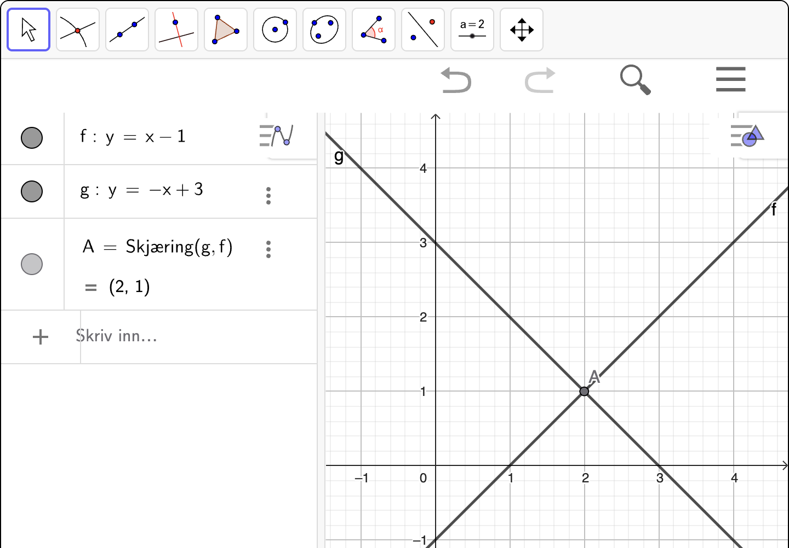

9. Lineære likninger#
Kunne løse lineære likninger grafisk.
Kunne løse lineære likninger algebraisk.
Kunne tolke programmer som løser lineære likninger, og skrive egne programmer som løser lineære likninger.
En lineær likning kan generelt sett skrives på formen
der uttrykkene på venstre og høyre side kan tolkes som lineære funksjoner. Vi har tre mulige strategier vi kan bruke for å angripe disse likningene:
Grafisk løsning: Vi bruker grafene til funksjonene og leser av løsningen.
Algebraisk løsning: Vi løser likningen ved å bruke algebraiske metoder der målet er å få \(x\) alene.
Løsning med programmering: Vi skriver et program som finner løsningen ved å bruke ulike strategier for å finne en tallverdi for \(x\) slik at likningen er oppfylt.
Grafisk løsning#
Når vi løser en lineær likning grafisk, tegner vi grafene til funksjonene på hver side av likningen og leser av skjæringspunktet mellom dem. Løsningen av likningen er da \(x\)-koordinaten til skjæringspunktet.
Eksempel 1#
En likning er gitt ved
Løs likningen grafisk.
Vi tegner grafene til funksjonene
Fra figuren til høyre kan vi se at grafene til \(f\) og \(g\) skjærer hverandre i punktet \((3, 7)\). Men det er \(x\)-koordinaten som løser likningen, som betyr at løsningen av likningen er
Typisk må vi faktisk tegne grafen når vi skal løse likningen. Da kan vi bruke graftegneren i Geogebra og løse likningen grafisk. La oss se på et eksempel:
Eksempel 2#
En likning er gitt ved
Nedenfor ser du en gif som viser hvordan man løser likningen med grafvinduet i Geogebra. Vi trykker på  (Skjæring mellom to objekt) etterfulgt av å trykke på hver graf for å finne skjæringspunktet.
(Skjæring mellom to objekt) etterfulgt av å trykke på hver graf for å finne skjæringspunktet.

Fra gif-en ser vi at skjæringspunktet mellom grafen til \(y = 3x - 1\) og linja \(y = -4\) er \((-1, -4)\). Det er \(x\)-koordinaten til skjæringspunktet som er løsningen av likningen, så løsningen er
Underveisoppgave 1#
Løs likningen nedenfor grafisk.
Vi tegner grafene til funksjonene på venstre og høyre side av likningen og finner skjæringspunktet mellom dem ved å bruke “skjæring mellom to objekt”  . Se figuren nedenfor:
. Se figuren nedenfor:
{kind=link}

Vi ser at skjæringspunktet er \((2, 1)\). Det er \(x\)-koordinaten til skjæringspunktet som er løsningen av likningen, så løsningen er
Grafisk løsning gir oss en visuell måte å komme fram til løsningen av en likning, men den har en klar begrensning. Ved mindre vi kan lese av eksakte skjæringspunkter, vil vi i beste fall kunne finne en tilnærmet verdi for løsningen av likningen. I slike tilfeller trenger vi en annen strategi hvis vi skal komme fram til nøyaktige svar, og det er der algebraisk løsning kommer inn i bildet.
Algebraisk løsning#
Algebraisk løsning handler om å få \(x\) alene slik at vi kan lese av verdien \(x\) må ha for at likningen skal være oppfylt. Dette kan vi gjøre ved å
Legge til eller trekke fra et ledd på begge sider av likningen.
Gange eller dele alle ledd på hver side av likningen med et tall som ikke er null. Det er også lov med variabler.
Vi går løs på et eksempel
Eksempel 3#
Løs likningen
Vi kan starte med å trekke fra \(2x\) på begge sider av likningen:
som gir
Deretter kan vi legge til \(2\) på begge sider av likningen:
som gir
Dermed er løsningen av likningen
Algebraisk løsning med CAS#
Vi kan også bruke CAS til å løse lineære likninger algebraisk. Dette innebærer at vi lar datamaskinen utføre den algebraiske utregningen for oss og gir oss svaret.
Eksempel 4#
Nedenfor ser du en gif som viser hvordan man løser likningen \(2x - 6 = 0\) med CAS.

Underveisoppgave 2#
Bruk CAS-vinduet til å løse likningen i eksempel 4.
Bruk CAS-vinduet til å løse likningen
Bruk CAS-vinduet til å løse likningen
Løsning med programmering#
Når vi løser likninger med programmering, er en vanlig strategi å systematisk prøve ut mange forskjellige verdier av \(x\) for å se om likningen er oppfylt. Før vi går videre, bør du repetere hvordan vi lager tallfølger med for-løkker så du husker hvordan vi kan lage mange forskjellige verdier av \(x\).
Underveisoppgave 3#
Ta quizen!
Strategien vi skal se på her, går ut på å prøve ut heltallige verdier for \(x\) og sjekke om likningen er oppfylt for noen av dem.
Utforsk 1#
Nedenfor vises noen programmer som prøver ut forskjellige verdier av \(x\) for å løse en likning.
For hvert program, finn ut hvilken likning som løses og forutsi hvilke verdier programmet skriver ut.
Strategien ovenfor har en klar begrensning: Den sjekker bare heltallige verdier for \(x\), og bare innenfor et begrenset intervall. Det betyr at vi ikke nødvendigvis finner en løsning selv om det faktisk finnes en. Senere skal vi se på strategier som gjør at vi kan komme rundt denne begrensningen og finne løsninger likevel.